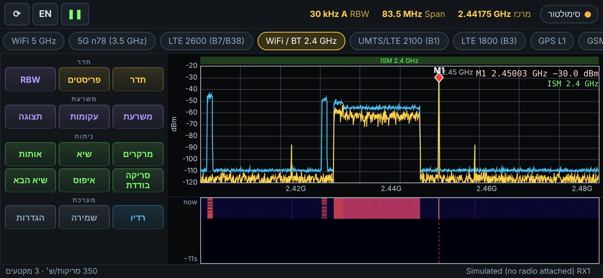
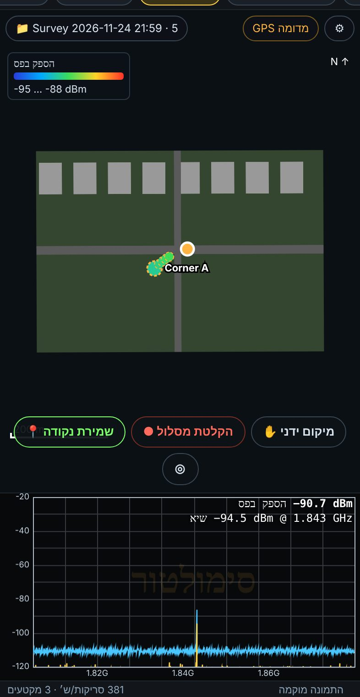
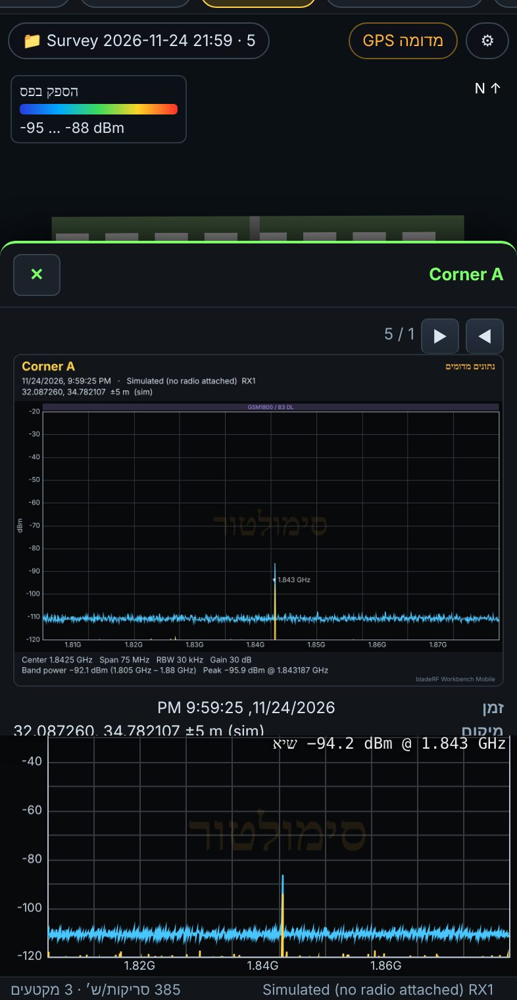
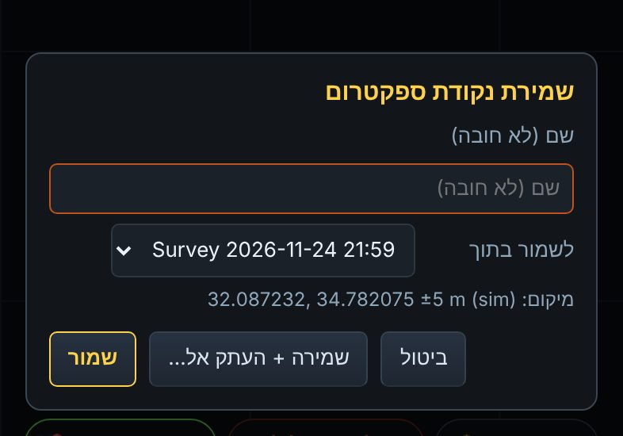

מדידת תדרי סלולר
עם bladeRF Workbench Mobile
מדריך למשתמש: הציוד, ההגדרות, זיהוי ומדידה של ערוצי LTE ו-5G, וסקר שטח על מפה
- מה צריך לפני שיוצאים
- מיקום: GPS של הטלפון או אנטנה?
- בטיחות ומגבלות המדידה
- הפסים הסלולריים בישראל
- חיבור והפעלה ראשונה
- הגדרות מומלצות למדידת סלולר
- זיהוי ערוץ: מה רואים על המסך
- מדידת עוצמה: הספק בפס והערכת RSRP
- סקר שטח עם מפה: נקודות, מסלולים ותמונת אזור
- עבודה בלי כרטיס: סימולטור
- פתרון תקלות
- צ'קליסט לפני יציאה לשטח
גרסת אפליקציה 1.1 · נובמבר 2026 · Netline
1. מה צריך לפני שיוצאים
| פריט | למה ומה לבדוק |
|---|
| bladeRF 2.0 micro (xA4) | המקלט עצמו. קולט מ-70 MHz עד 6 GHz, כך שכל הפסים הסלולריים בישראל נמצאים בתחום שלו. |
| אנטנה רחבת פס עם מחבר SMA | אנטנה ל-LTE/5G שמכסה בערך 700–3800 MHz. אנטנה צרה (למשל WiFi בלבד) תראה פסים נמוכים חלשים בעשרות dB, והמפה תטעה. |
| טלפון Android 8 ומעלה | עם יציאת USB-C שתומכת ב-OTG (כמעט כל טלפון מודרני). מומלץ טלפון עם USB 3 לסריקות מהירות יותר. |
| כבל USB-C OTG, ו-USB hub עם ספק כוח | הכרטיס צורך יותר זרם ממה שטלפונים רבים מספקים. אם הכרטיס לא עולה או מתנתק באמצע, מחברים אותו דרך hub מוזן או מזינים את כניסת ה-DC שלו. |
| Power bank | לסקר הליכה ארוך. המסך דולק כל הזמן, וגם ה-bladeRF צורך חשמל. |
| קובץ FPGA (רק אם צריך) | hostedxA4.rbf מתיקיית ההתקנה של bladeRF במחשב. צריך אותו רק אם הכרטיס לא טוען FPGA מהזיכרון שלו. טוענים פעם אחת דרך רדיו ← טען hostedxA4.rbf. |
| תמונת לוויין או שרטוט של האתר | לא חובה, אבל מומלץ מאוד. צילום מסך מ-Google Maps או מ-GovMap של אזור הסקר. מעלים אותה למפה ומכיילים (פרק 9). |
2. מיקום: GPS של הטלפון או אנטנה?
התשובה הקצרה: לא צריך לחבר אנטנת GPS.
המיקום של כל מדידה נלקח מה-GPS של הטלפון עצמו. ל-bladeRF 2.0 micro אין מקלט GPS, וגם לא צריך אותו כדי לתייג מיקום.
- דיוק טיפוסי: 3–10 מטר בשטח פתוח. ליד בניינים גבוהים זה יכול להגיע לעשרות מטרים, ובתוך מבנה לפעמים אין מיקום בכלל. האפליקציה מציגה את הדיוק בצ'יפ GPS ±m ושומרת אותו עם כל נקודה.
- בתוך מבנה: משתמשים ב-✋ מיקום ידני ונוגעים במפה במקום שבו עומדים. זה עובד הכי טוב על שרטוט מכויל של הקומה.
- מתי כן חשובה אנטנת GPS לכרטיס: רק לסנכרון זמן או תדר מדויק (GPSDO), למשל למדידות סטיית תדר ברמת ppb. זה לא קשור למיקום, והאפליקציה לא צריכה את זה.
- הרשאה: בפעם הראשונה שפותחים את לשונית מפה, Android מבקש הרשאת מיקום. מאשרים "בזמן השימוש באפליקציה". אם ה-GPS כבוי בהגדרות של הטלפון, האפליקציה תציג הודעה.
3. בטיחות ומגבלות המדידה
אין מנחת בכרטיס.
אסור להכניס לכניסת ה-RX יותר מ-−10 dBm. לא מחברים את ה-bladeRF ישירות ליציאה של משדר, מגבר או אתר. מאנטנה רגילה ברחוב אין סכנה. ממש ליד אנטנת אתר כדאי להנמיך את ה-Gain. האפליקציה מציגה רמת RX מעל −10 dBm ו-עומס יתר בכניסה.
- האפליקציה קולטת בלבד. היא לא משדרת כלום, והמחולל (TX) של תוכנת המחשב לא כלול בה.
- dBm מוחלט הוא הערכה. הרמה המוחלטת תלויה בכרטיס, באנטנה ובכבלים. לכיול מכניסים אות ידוע ומכוונים את משרעת ← תיקון כיול. השוואות יחסיות (נקודה מול נקודה, לפני ואחרי) אמינות גם בלי כיול.
- אנלייזר ספקטרום הוא לא טלפון. הוא מודד הספק בתדר. הוא לא מפענח את האות ולא יודע לאיזה מפעיל שייך ערוץ, ולכן ה-RSRP שמחושב בפרק 8 הוא הערכה.
4. הפסים הסלולריים בישראל
מאז ינואר 2026 משרד התקשורת מכבה בהדרגה את רשתות ה-2G וה-3G, ולכן ברוב המקומות רואים בעיקר 4G (LTE) ו-5G. הטבלה מפרטת את טווחי ה-Downlink, שבהם האתרים משדרים. את הטווחים האלה מודדים בסקר. לכל אחד מהם יש פריסט מוכן באפליקציה.
| פס | טכנולוגיה | Downlink (MHz) | Uplink (MHz) | הערות |
|---|
| B28 / n28 (700) | LTE, 5G | 758 – 803 | 703 – 748 | כיסוי רחב ותוך-מבני. ה-5G בפס הזה (n28) אצל חלק מהמפעילים. |
| B5 (850) | LTE (לשעבר 3G) | 869 – 894 | 824 – 849 | |
| B8 (900) | LTE / GSM (בסגירה) | 925 – 960 | 880 – 915 | שאריות GSM עשויות להופיע עד סיום הכיבוי. |
| B32 (1500 L-band) | LTE (Downlink בלבד) | 1452 – 1496 | — | משמש כ-Carrier Aggregation. אין לו Uplink. |
| B3 (1800) | LTE | 1805 – 1880 | 1710 – 1785 | הפס העיקרי של LTE בישראל. |
| B1 (2100) | LTE (לשעבר 3G) | 2110 – 2170 | 1920 – 1980 | |
| B7 (2600) | LTE | 2620 – 2690 | 2500 – 2570 | קיבולת בערים. |
| n78 (3.5 GHz) | 5G NR, TDD | 3300 – 3800 | אותו פס (TDD) | האות מתפרץ (TDD), ולכן חובה Max Hold. |
שימו לבהפסים והחלוקה בין המפעילים משתנים עם השנים. הטבלה מבוססת על מקורות פתוחים מסוף 2026. את השיוך המדויק של ערוץ למפעיל מאמתים מול המפעיל או מול טלפון במצב Field Test.
Sources: frequencycheck.com/countries/israel · kimovil.com/en/frequency-checker/IL · Israel Ministry of Communications 2G/3G shutdown notice (gov.il, July 2025)
5. חיבור והפעלה ראשונה
- מחברים את האנטנה ל-RX1 של ה-bladeRF.
- מחברים את הכרטיס לטלפון בכבל OTG (או דרך hub מוזן).
- Android שואל אם לפתוח את bladeRF Mobile. מסמנים "תמיד" ומאשרים. האישור הזה הוא גם הרשאת ה-USB.
- הצ'יפ למעלה מתחלף ל-● bladeRF מחובר · RX1 בירוק. אם כתוב סימולטור בכתום, הכרטיס לא מחובר: לוחצים על הצ'יפ ואז על bladeRF.
- ב-רדיו בודקים את חיבור USB. ב-USB 2 האפליקציה מגבילה בעצמה את קצב הדגימה ל-10 MS/s, כדי למנוע ניתוקים.

מסך הספקטרום לרוחב: פריסטים למעלה, מקשים בצד, ספקטרום ו-Waterfall
6. הגדרות מומלצות למדידת סלולר
| הגדרה | ערך מומלץ | למה |
|---|
| תחום (Span) | פריסט של הפס, למשל B3 DL 1800 | מכסה את כל ה-Downlink של הפס, כל המפעילים יחד. כדי לבדוק ערוץ אחד עושים עליו זום בצביטה. |
| RBW | אוטומטי, או 30–100 kHz | מספיק להבחין בגבולות של ערוצי LTE. RBW צר יותר מאט את הסריקה בלי להוסיף מידע. |
| עקומות | עקומה 1: Live, עקומה 2: Max Hold | LTE משדר ברציפות, אבל 5G TDD (n78) והעומס משתנים כל הזמן. Max Hold מראה את התמונה המלאה. |
| גלאי (Detector) | Peak לזיהוי, Average לרמות | Peak תופס את הקצוות של ערוץ מתפרץ. Average נותן רמה יציבה. ההספק בפס מחושב תמיד מעקומת ההספק הממוצע, לא מהתמונה. |
| Gain | מתחילים ב-30 dB | מעלים עד שרצפת הרעש כבר לא יורדת. אם מופיע עומס יתר בכניסה, מורידים 6–10 dB. |
| Ref level | כיול סקלה אוטומטי | מציב את הערוץ החזק קרוב לראש המסך. |
7. זיהוי ערוץ: מה רואים על המסך
- ערוץ LTE נראה כ"שולחן" שטוח ברוחב קבוע. ברוחב 20 MHz החלק התפוס הוא כ-18 MHz, ב-10 MHz כ-9 MHz, וב-5 MHz כ-4.5 MHz. 5G NR רחב יותר (n78: עד 100 MHz).
- לחיצה ארוכה על ערוץ מפעילה את המזהה של תוכנת המחשב. הוא מציג את הטכנולוגיה המשוערת (LTE / LTE או 5G NR / GSM…), את הרוחב התפוס, את הרמה ואת שם הפס.
- אותות מציג את כל הערוצים הבולטים בתחום, עם רוחב, טכנולוגיה ופס. נגיעה בשורה עושה זום לערוץ ומציבה עליו מרקר.
- Downlink מול Uplink: ב-DL רואים שולחנות יציבים, כי האתר משדר כל הזמן. ב-UL רואים פרצים חלשים, ורק כשיש טלפונים פעילים קרוב.
- פס תוכנית התדרים מעל הגרף מראה באיזה פס נמצאים, וליד כל מרקר מופיע שם הפס.
8. מדידת עוצמה: הספק בפס והערכת RSRP
הספק בפס (Band power) הוא סך ההספק בתחום התדרים שבחרתם. כדי למדוד ערוץ אחד:
- עושים זום כך שהערוץ ממלא את המסך, למשל 1805–1825 MHz.
- במפה: ⚙︎ ← צביעת נקודות לפי ← הספק בפס ← לפי התצוגה הנוכחית. מעכשיו כל נקודה נמדדת בדיוק על הערוץ הזה.
הערכת RSRP, הערך שהטלפון מציג: RSRP הוא ההספק של תת-נושא אחד מתוך 12·NRB, ולכן בקירוב:
| רוחב ערוץ LTE | NRB | RSRP ≈ הספק בפס פחות |
|---|
| 5 MHz | 25 | 24.8 dB |
| 10 MHz | 50 | 27.8 dB |
| 15 MHz | 75 | 29.5 dB |
| 20 MHz | 100 | 30.8 dB |
דוגמההספק בפס של −55 dBm על ערוץ של 20 MHz נותן RSRP של בערך −55 − 30.8 ≈ −86 dBm. החישוב נכון לערוץ עמוס במלואו. בערוץ שקט ההספק נמוך יותר וה-RSRP האמיתי גבוה מההערכה, בכמה dB. מוסיפים גם את הגבר האנטנה ואת הפסדי הכבל דרך תיקון כיול.
9. סקר שטח עם מפה
לשונית מפה שומרת כל מדידה עם המיקום שבו היא נלקחה. סקר הוא ביקור אחד באתר: הנקודות שלו, המסלולים שלו ותמונת האזור.
א. הכנה
- מצלמים מסך של האזור מ-Google Maps (תצוגת לוויין) או מ-GovMap, או מכינים שרטוט של האתר.
- במפה: 📁 ← סקר חדש, ואז ⚙︎ ← העלאת שרטוט / תמונת לוויין….
- כיול: נוגעים בתמונה במקום שאפשר לזהות (פינת בניין, צומת), ומזינים את הקואורדינטות שלו. אפשר להדביק מ-Google Maps, למשל 32.0853, 34.7818, או לעמוד על המקום וללחוץ השתמש במיקום הנוכחי שלי. חוזרים על זה בנקודה שנייה, רחוקה מהראשונה. נקודה שלישית משפרת את הדיוק ומתקנת סיבוב ועיוות.
- בוחרים מדד צבע: הספק בפס (מומלץ) או רמת שיא, ואת הפס שנמדד (פרק 8).

נקודות ומסלול על תמונת אזור מכוילת. כחול = חלש, אדום = חזק

נגיעה בנקודה פותחת את הניתוח שנשמר: JPEG, מיקום, הספק, שיא ואותות
ב. שמירת נקודה
- 📍 שמירת נקודה (במפה), או שמירת נקודה במקשי הספקטרום. נותנים שם, או משאירים ריק לשם אוטומטי, ובוחרים סקר יעד.
- שמור שומר את הנקודה בסקר: תמונת JPEG של הספקטרום עם המיקום, השעה וההגדרות, ואת נתוני הספקטרום המלאים.
- שמירה + העתק אל… שומר את הנקודה וגם מעתיק את ה-JPEG ליעד שבוחרים בטלפון (Downloads, Drive וכו').

חלון השמירה: שם (לא חובה), סקר יעד ומיקום
ג. הקלטת מסלול בזמן אמת ("טיול")
- ● הקלטת מסלול מתחיל את ההקלטה. כל 2 שניות (ניתן לשינוי, וגם אפשר להגדיר מרחק מינימלי) נשמרת נקודה עם ה-Max Hold וההספק הממוצע מאז הנקודה הקודמת. כך גם פרץ קצר בין שתי נקודות לא הולך לאיבוד.
- המסלול מצטייר על המפה בזמן ההליכה, וכל נקודה נצבעת לפי העוצמה. ■ עצירת מסלול מסיים.
- נגיעה בכל נקודה במסלול מציגה את הספקטרום שנמדד שם. פתיחה באנלייזר מחזיר את האנלייזר לאותו תחום.
ד. ייצוא
- ייצוא (KML + CSV): קובץ KML נפתח ב-Google Earth, עם הנקודות, המסלולים והתמונות. קובץ ה-CSV נפתח ב-Excel.
- מפה כ-JPEG: תמונה של המפה עם מקרא הצבעים, מוכנה לדו"ח.
10. עבודה בלי כרטיס: סימולטור
- לאפליקציה יש שני אייקונים: bladeRF Mobile (רגיל) ו-bladeRF Simulator. השני נפתח ישר על סצנת RF מדומה ולא נוגע ברדיו. הוא טוב להדרכה, להדגמה ולתרגול.
- הצ'יפ העליון מראה תמיד מאיפה מגיעים הנתונים: ● bladeRF מחובר (ירוק), סימולטור (כתום) או מנותק (אדום). על הגרף עצמו מופיע הכיתוב SIMULATOR.
- GPS מדומה (במסך הגדרות המפה) מזיז מיקום מדומה במעגל, כדי לתרגל סקר בתוך מבנה. נקודה שנשמרה עם סימולטור או GPS מדומה מסומנת נתונים מדומים, במסגרת כתומה מקווקוות, כדי שאף פעם לא יתבלבלו בינה לבין מדידה אמיתית.
11. פתרון תקלות
| תקלה | מה לעשות |
|---|
| הכרטיס לא מזוהה / "No bladeRF on USB" | בודקים שהכבל הוא OTG ומעביר נתונים. מנסים hub מוזן. מוודאים שאישרתם את הרשאת ה-USB. לוחצים רדיו ← bladeRF. |
| "The FPGA image needs loading" | טוענים את hostedxA4.rbf דרך רדיו (פרק 1). |
| ניתוקים או Timeout באמצע סריקה | מורידים את RBW ← קצב דגימה מרבי ל-10 MS/s. בודקים את אספקת החשמל. |
| אין מיקום / "מחכה ל-GPS" | יוצאים לשטח פתוח ומחכים 30–60 שניות. בודקים שה-GPS דולק ושהרשאת המיקום אושרה. בתוך מבנה משתמשים ב-✋ מיקום ידני. |
| עומס יתר בכניסה / רמות מוזרות | מורידים Gain. אם האנטנה ממש ליד אתר, מתרחקים. |
| הנקודות לא מופיעות על התמונה | התמונה לא כוילה: ⚙︎ ← כיול מיקום, עם לפחות 2 נקודות. |
| מפת הרחובות לא נטענת | היא צריכה אינטרנט. תמונת האזור והרשת עובדות גם בלי. |
12. צ'קליסט לפני יציאה לשטח
- טלפון ו-Power bank טעונים, וה-bladeRF עולה בבדיקה בבית (צ'יפ ירוק).
- אנטנה רחבת פס מחוברת ל-RX1.
- קובץ FPGA נטען, אם הכרטיס צריך אותו.
- סקר חדש עם שם האתר, תמונת לוויין מועלית ומכוילת ב-2–3 נקודות.
- פריסט הפס הנמדד נבחר, ומדד "הספק בפס" מוגדר על הערוץ.
- Gain מכוון (בלי עומס יתר), ו-Max Hold פעיל.
- GPS דולק, הרשאת מיקום אושרה, ובצ'יפ מופיע דיוק של פחות מ-15 m.
- ה-GPS המדומה כבוי, והצ'יפ העליון לא כתום.
- בסוף: ייצוא (KML + CSV) ו-מפה כ-JPEG.